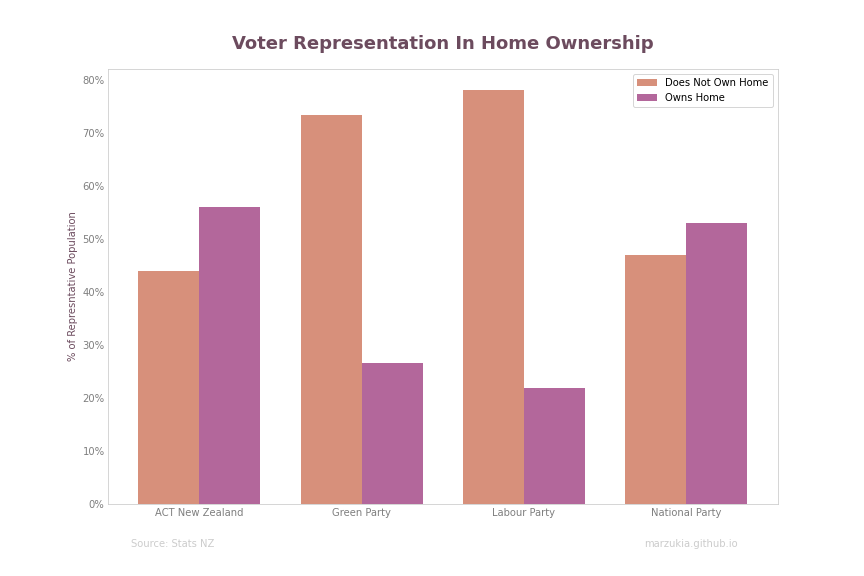

Breaking Down the 2020 Elections

Table of Contents
I’ll be the first to admit that I’m not the greatest fan of politics, in a typical scenario I’d avoid talking about it like the plague. However, as the elections have come and gone, it’d be sacrilege for me to pretend the goldmine of electoral data now available did not exist. In this case, my love for all things data outweighs my disdain for politics. So I thought, why not make it fun?
In Basketball, there is a litany of metrics which can give a different perspective on how good a player is. There are standard metrics like Points per Game, or Assists per Game which give a pretty obvious indicator of a player’s contribution to a game, and more detailed measurements such as ‘Offensive Rating’ which are far more complex. For example, ‘Offensive Rating’ attempts to paint an overall picture of how well a player plays offensively by not only his points contribution but things like how well he passes or how well he sets screens for a play.
So in the theme of treating the elections like a sport, our ‘plain jane’ metrics would be votes received and seats gained. What about our complex or advanced metrics? What can we do to get a better idea of the ‘full picture’?
Note: Please keep in mind that there are quite a few assumptions which have been made, as well as limitations of the data itself. For my methodology, approach and commentary on decisions around the underlying data, please see the end of this article.
Donation Utilisation Efficiency #
Measures which explicitly look at the return on hard-earned dollars are the norm in almost every industry; it’s natural to want to understand what you’re getting out of spending your hard-earned dollar(s). For a political party, the equivalent of money going in would be donations received from the government and their private supporters.
Note: Political parties have to disclose what they receive in donations each year. Unfortunately, at the time of writing this data was not available for 2020. The figures discussed in this section are the sum of contributions received by each party in 2018 and 2019.
As a banker, I love my acronyms. Therefore I have devised a new one’ Donation Utilisation Efficiency’, or DUE for short. DUE looks at the ratio of donations received per party, and the overall results achieved by the said party; this metric looks at both seats and votes acquired.
This metric intends to do the following:
- Act as my proxy to quantify the overall ‘brand power’ of each party (votes)
- Describe how effectively they’ve translated party donations into actual power (seats)
The graph is a summary of the main parties, and how well they’ve translated their donation funds into both votes and seats.
Voter Age Demographics #
Age plays a significant factor on who you would likely vote for; this is simply because your generation will dictate things like your phase in life, asset ownership or general financial security.
There wasn’t much that I wasn’t expecting when seeing the results, key take-aways being:
- The left-leaning parties (Green and Labour) have far greater representation for the younger generations (Gen X and Millenials).
- Conversely, the right-leaning parties, have far greater representation of the older generation.
Voter Housing Demographics #
The housing crisis in New Zealand is one of the most significant issues that New Zealand currently faces, so naturally, I wanted to make a graph on that too.
There are some interesting that instantly pop out to me when I view this data:
- Labor has a massive proportion of their voter base that do not own homes; I was incredibly surprised by this given that Labor’s position on the matter is ‘keep house prices as they are’.
- The majority of National and ACT supports own their own homes, so it feels intuitive that the housing crisis would not be as front of mind as it would be for Green/Labour supporters.
Power Rankings #
In the next few sections, I’ll attempt a ‘power ranking’ of sorts of the four political parties noted.
1. Labour #
It’s not an easy feat to have a single majority in an MMP government, but Labour has done it. Regardless of how you view Labour’s policy, there’s no denying that Jacinda Ardern has been an excellent crisis leader over the last three years handling the significant incidents like the Christchurch Mosque Shootings, White Island Eruption, and now the COVID-19 pandemic very well.
I’d say that Jacinda is more or less Labour at this point, and the DUE reflects that. The cost for Labour to influence voters and convert their relatively lesser resources into seats is significantly less than their competition.
Labour has some significant challenges in their near future with some of the key ones being:
- Handling of the COVID19 recovery both economically and socially. Would be continued and prolonged lockdowns erode the public goodwill in the Labour’ brand’?
- Opposition from both the right and left will likely cause additional pressure Labour did not experience in their last term.
- Actually dealing with the housing crisis. 80% of their voters do not own their own home; it’s a severe no brainer to deal with this if they want to retain their voting base.
Labour’s position is more or less ‘keep the status quo’ - maybe that’s just what New Zealanders want?
2. National #
It couldn’t have been easy to be the opposition to a party which had recently successfully contained a pandemic. The constant string of internal bickering, leaks and controversies also did not help.
Their perfect storm of missteps and misfortune has predictable results:
- Right-leaning national supports fled in droves to the likes of ACT and New Conservative.
- In an attempt to recover these voters, National shifted further right in their policies around tax breaks, gun control, and border control causing their more centrist supporters to shift inwards towards Labour.
- This resulted in National seeing a massive decline losing 21 seats between elections, long-held seats such as Ilam were lost to Labour.
- Despite only receiving 26% of votes, National by far has the most significant amount of donations with nearly double the next highest party.
- Compared to their greatest rival, National’s DUE was three times greater than Labour’s indicating it was far more challenging for them to influence voters to vote for them or rather voters were already more inclined to vote for Labour over National.ye
In summary, National did bad - but I didn’t have to tell you that did I?
3. Greens #
I’ve placed Greens ahead of ACT as I feel that Labour would be much more willing to deal with the Greens due to their closer ideologies.
Greens see themselves with more seats this time around. However, they will likely no longer be part of the acting government for this electorate. Instead, I predict their role this time around will be as the opposition voice for the left.
They’ve had their share of missteps (ahem, James Shaw). Still, they’ve also done some notable things such as negotiating the Cannabis Referendum as part of their confidence and supply agreement, and introduction of the Zero Carbon Bill.
Anecdotally, I’ve heard that Green supporters tend to be more socially conscious younger people with decent incomes. The donations received by Greens reflect this, receiving nearly as much as Labour with a tenth of their votes. However, this doesn’t necessarily translate to an increase in votes or seats.
Their DUE of $5.23 per vote makes sense too. The Greens more social leaning policies such as their Wealth Tax, or previously attempted Capital Gains Tax means that their voter base is a lot more defined rather than the more centrist parties such as National or Labor. It would cost them more to convince those voters who are to the right of them to vote for Green.
Looking at the demographics of Green supporters, their base is overwhelmingly concentrated in the younger generations (Gen Z, Millenials) and are likely not to own their own home. I expect that Greens will be a significant voice in pushing for change around the housing crisis.
4. ACT #
Wow! ACT came back with a vengeance coming in with nine extra seats than they had the previous elections. I am genuinely quite impressed at how effectively ACT has been in stealing votes from National.
Having only one seat in parliament last year, they managed to accomplish something significant - introducing the End of Life Choice Act.
ACT has a similar scenario to the Greens where their dedicated voter base is already defined. However, unlike the Greens, the majority of their voters are older and own their own homes. Interestingly enough, this wealthier voter base did not translate to an increase in how much donations they received. But they did better than the likes of Greens who had double the amount of donations.
Maybe it’s easier to convince ‘gun enthusiasts’ to vote for them where there is no other party who are realistically offering gun law repeals.
I’m interested to see how ACT’s presence in our political environment will impact National in the long term. Will National continue to shift itself right to try to recapture these lost voters?
Methodology & Assumptions #
All sources are openly available from Stats New Zealand. If you want to do something similar, I highly encourage you to do so.
Methodology #
- Meshblocks geometries were geometrically unioned by it’s ‘Statistical Area 2’ (SA2) grouping.
- Preliminary voting locations were geolocated and then intersected with the prepared geometry above.
- Total votes were summed using party name, and SA2 area name.
- The top ten SA2 areas for each major party was chosen as a representative sample for its voter base. The metric chosen was the total amount of party votes as a percentage of total SA2 votes.

The above excerpt shows this visually:
- Red is the unioned meshblock geographies grouped by SA2 area
- Blue represents the underlying meshblocks
- Yellow represents the geolocated location of a voting station
Assumptions & Limitations #
- Preliminary votes have been used, this is subject to change as numbers are finalised.
- I’ve excluded postal votes, as well as ’non-ordinary’ voting places such as rest homes or prisons. I excluded these as I was not able to locate these votes to an SA2 area accurately.
- I’ve assumed that the voting stations represent the SA2 area which they overlap. Unfortunately, there are cases which SA2 areas do not entirely overlap Electorate areas, meaning some places would be split. To avoid any complications or misrepresentations which may arise from this, I opted to keep it simple.